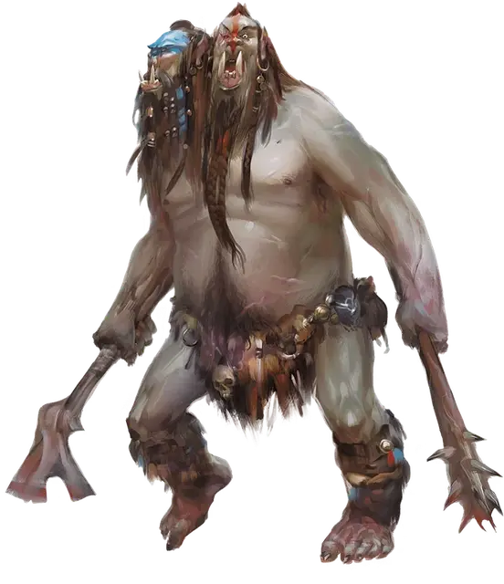

Эттин
Ettin
Большой Великан, хаотично-злой

Класс Доспеха 12 (природный доспех)
Хиты 85 (10к10 + 30)
Скорость 40 футов
| мод | спас | ||
|---|---|---|---|
| СИЛ | 21 | +5 | +5 |
| ЛОВ | 8 | −1 | −1 |
| ТЕЛ | 17 | +3 | +3 |
| мод | спас | ||
|---|---|---|---|
| ИНТ | 6 | −2 | −2 |
| МДР | 10 | +0 | +0 |
| ХАР | 8 | −1 | −1 |
Навыки Восприятие +4
Чувства тёмное зрение 60 футов, пассивное Восприятие 14
Языки Великаний, Орочий
Опасность 4 (1100 опыта)
Бонус мастерства +2
Среда обитания Горы, Подземье, Холмы
Особенности
Две головы. Эттин совершает с преимуществом проверки Мудрости (Восприятие), а также спасброски от глухоты, испуга, лишения сознания, ослепления, очарования и ошеломления.
Неусыпный. Когда одна голова эттина спит, другая бодрствует.
Действия
Мультиатака. Эттин совершает две атаки: одну боевым топором и одну моргенштерном.
Боевой топор. Рукопашная атака оружием: +7 к попаданию, досягаемость 5 футов, одна цель. Попадание: Рубящий урон 14 (2к8 + 5).
Моргенштерн. Рукопашная атака оружием: +7 к попаданию, досягаемость 5 футов, одна цель. Попадание: Колющий урон 14 (2к8 + 5).
Описание
Эттины — сутулые двуглавые великаны с грубыми чертами орков. Эттины никогда не моются, если могут избежать этого, поэтому их толстые шкуры обычно покрыты приличным слоем грязи и жира под вонючими мехами, в которые они одеваются. Длинные грязные патлы волос свисают на лица, а из полного кривых зубов и клыков рта смердит.
Раздвоение личности. Две головы эттина представляют собой две запертые в одном гигантском теле личности. У каждой головы свой разум, характер, имя, свои предпочтения и вкусы. Привязанные друг к другу с рождения, они редко испытывают одиночество или уединённость. Этот постоянный контакт порождает неприязнь, поэтому эттин постоянно спорит и ругается сам с собой, а две головы постоянно бранят друг друга за малейшую оплошность.
Когда другие существа обращаются к эттину, они складывают оба имени каждой из голов, получая таким образом одно общее имя, относящееся ко всему существу в целом. Если одну голову эттина зовут Харгл, а вторую — Варгл, то всего эттина другие существа будут звать Харглваргл.
Отшельники. Конфликтующие сами с собой эттины нетерпимы и к другим эттинам, поскольку разговор между двумя эттинами почти всегда представляет собой ругающуюся толпу из четырёх воинственных голов. Из-за этого большинство эттинов живёт в одиночестве, терпя других только для размножения.
Две головы эттина всегда одного пола с телом. Среди эттинов доминирует женский пол, и именно они являются инициаторами брачных ритуалов. После нахождения подходящего логова, женщина охотится и завоёвывает мужчину, который кормит её и заботится о ней во время шестимесячной беременности. Как только рождается ребёнок, мужчина эттин освобождается от рабства. Когда ребёнок становится достаточно взрослым, чтобы охотиться для себя, мать посылает его подальше и покидает логово.
Одна голова хорошо, а две — лучше. Эттин может разрешить личностные разногласия и полностью посвятить себя задаче, когда сосредоточен на выгодной обоим головам цели или перед общей угрозой. Эттин воюет с оружием в каждой руке, что позволяет делать две атаки, направляемые соответствующей головой. Когда эттин спит, одна из его голов остаётся настороже, только так получая мгновения уединения, и высматривая любого, кто посмеет нарушить такое драгоценное одиночество.
Связь с орками. На древнем диалекте Общего, слово «эттин» означает «уродливый великан». В орочьих легендах говорится, как однажды они наткнулись на храм Демогоргона, волшебство которого превратило их в гигантских пародий на двуглавого Князя Демонов. Доведённые до безумия, эти существа разбрелись по пустошам, и стали первыми эттинами.
Какой бы ни была правда о происхождении эттинов, орки считают их дальними родственниками, и орочьи племена нередко нанимают эттинов в качестве охранников, разведчиков и мародёров. Эттины недолюбливают орочьи порядки, но орки могут расположить их обещанием пищи и трофеев.